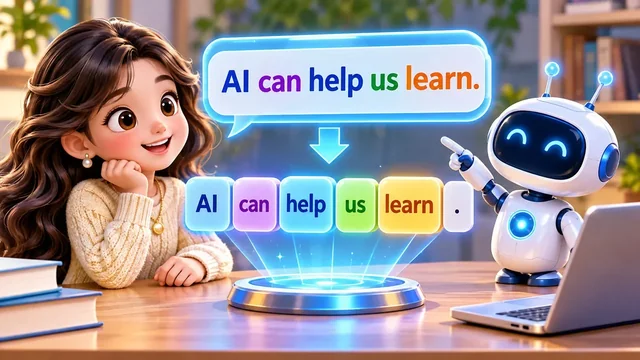
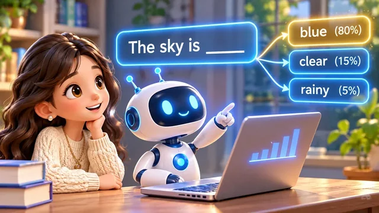
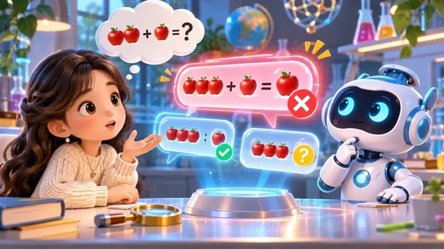

Welcome to Episode 10 of Kiwi 爱AI Study’s AI Knowledge Class.
Last time we practised focused prompts — clear goals, useful context, and requirements that aim AI at one job.
But once you press send, what actually happens behind the scenes? Why can AI sometimes solve hard puzzles and sometimes trip on easy ones?
Today we walk through a simplified version of how large language models produce text — and we separate generating answers from editing or checking them.
The basic flow
A handy chain to remember:
Prompt → Tokenization → Parameters + Context → Prediction → Answer.
In plain words: your question goes in, becomes tokens the model can read, gets combined with what it learned and what the conversation provides, is extended one prediction at a time, and shows up as the reply you see.
Prompt — your message leaves the chat box and becomes the job ticket the system must handle.
Tokenization — letters and symbols are chopped into tokens and numbers the network can score.
Parameters + context — long-term training meets this conversation’s history and rules; the model crunches both together.
Prediction — the model picks the next token, again and again, following the likeliest path until the draft feels finished.
Answer — tokens stream back into readable words on your screen; that visible message is what we call the reply.
Below we unpack the same five beats with the 12 × 13 example so each stage has a picture to remember.
Five steps in the pipeline

Step 1 — Prompt
Imagine a tiny math question: What is 12 × 13? When you send it, that message becomes input for the AI system — not magic yet, just data on its way in.
Nothing is answered at this moment — the product is only receiving bytes, formatting them, and handing them to the model stack.
Step 2 — Tokenization
The model does not “read” like a human scanning a page. It first splits text into tokens — pieces of words, numbers, or punctuation — then turns them into numeric form the network can process.
Even a short sentence becomes a chain of tokens — like breaking “AI can help us learn” into one block at a time before the model starts calculating.
Your 12 × 13 prompt becomes many small pieces too — digits, operators, and spaces each land in the token stream before math patterns kick in.
Step 3 — Parameters and context
Parameters are patterns the model stored during training — billions of tuned numbers, not a shelf of textbook answers.
Context is what the model can use right now: your question, earlier turns in the chat, and sometimes system instructions.
The network combines both and runs heavy math — still no single “look up 156 in a table” step for chat models.
At this stage the tubes-and-puzzle picture fits: tokens move through the trained network while the chat history whispers, “we are still talking about multiplication.”

Step 4 — Prediction
Many students find this the most interesting step: everything you read in the reply is built here, one token at a time.
Here is the core idea: the model predicts the next token, again and again. It is advanced guessing — shaped by training and context, not random dice rolls.
Think about finishing a sentence in an essay: you do not print every word at once — you pick the next word that fits. The model does that at machine speed, millions of times faster.
The percentages beside each word choice are the point: the model scores many continuations, then walks down one branch. Blue (80%) does not mean the sky is always blue — it means that word is the top guess this time.
For 12 × 13 = ? the same loop runs: it may print 12 × 13 = first, then stack digits 1 → 5 → 6 until the line looks finished. Real models may spit out a whole chunk like 156 at once, but the idea is unchanged.
If you use “streaming,” you are literally watching step 4 happen — each flash of new text is another prediction landing on the page.

Step 5 — Answer
When enough tokens are chosen, you see the finished line: 12 × 13 = 156. The model did not necessarily “remember” 156 from a list — it predicted a likely continuation, step by step.
Stopping rules matter too: a stop signal, a length limit, or the model deciding the answer “sounds complete” — then step 5 freezes what you see as the final message.
Along the way it may try lines that look almost right but fail a quick check — like a wrong apple count before the numbers settle. Training still teaches math patterns, and some setups use tools for exact calculation.
You might ask: did it secretly look up 156 in a vault? For chat models, the usual story is prediction — not opening a perfect answer database each time. That is why verification still belongs to you, especially on homework or exams.
That is also why AI can ace hard-looking problems yet slip on easy ones: the same prediction engine is doing both — confidence on screen is not a certificate of correctness.
Regeneration vs. precise editing
When you ask AI to “fix” something, are you editing the old result or getting a fresh one? That distinction matters for text, images, code, and slides — and it is easy to overlook after Episode 9’s focus on prompts.
In chat, “make that shorter” usually means the model regenerates new tokens — it does not surgically cut the message already on screen.
For images, “only shrink the title” might still redraw background, colours, or faces. The prompt can be clear while the tool cannot lock every pixel.
Code and documents follow the same split: rewriting the whole page is regeneration; patching named files with an editor is closer to precise editing. For Word or slides, true title-only edits need tools that touch text boxes — not a full redesign.
Three ideas to keep straight: Regeneration (new creative draft), Precise editing (change one object or file), and Template-based design (fixed layout, editable labels).
Series covers for Kiwi 爱AI Study work best when background, logo, and title slots are templates — you replace episode text without regenerating the whole poster each time.
Need a brand-new creative direction? Regeneration is fine. Need one label changed while layout stays identical? Reach for precise editing or templates. A series of similar homework explainers? Build a template once, then swap text.
“Keep everything else unchanged” is a task request, not a promise the tool can honour. Always compare before and after — the magnifying-glass habit beats trusting the green check on first glance.
Whether a change is precise or sloppy depends on the model, the tool, and the edit mode — not only on how polite your prompt sounds.
Need a new idea? Regenerate. Need everything else untouched? Pick a tool that edits objects, layers, or source files.
Does AI check its own answer?
If the first answer is wrong, will AI notice and fix it by itself? Sometimes — when the setup supports multi-step reasoning or external tools.
A coding agent might write code, run tests, read errors, patch, and test again: Generate → Test → Find errors → Revise → Test again.
That loop needs permission to run programs, read error logs, and try again — a plain chat box often stops after one polished paragraph.
Not every chat product runs that loop automatically. Even when it does, it may miss mistakes. Generating and verifying are different jobs — yours still matter.
Think of the coding loop like fixing a robot’s path: a red X means “try another route,” a green flag means “good enough for now” — not “perfect forever.”
In everyday homework help, you are still the tester: skim facts, redo one calculation, or ask for sources — do not assume a second apology means a second fix.
Today you met the chain from prompt to answer, saw prediction at the centre, and compared regeneration, editing, and self-check loops.
You can now name the five beats: prompt in, tokens cut, context plus parameters crunch, prediction repeats, answer appears — then you decide whether to trust or test it.
Remember the headline: sending a focused prompt is only the start — knowing what happens after send helps you judge the reply calmly.
Next episode: why AI still fails — even when the pipeline runs smoothly.
See you then — and try naming which step (token, context, or prediction) your last confusing reply might have stumbled on.